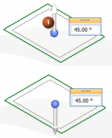

Create an isocline curve
-
Choose Surfacing tab→Curves group→Isocline
 .
. -
Select a reference plane or planar face.
-
Select a surface body.
-
In the Angle edit box, type an angle within the range of 0.00 to less than 90.00 degrees.
-
Click the Accept button.
Note:
You can click the direction arrow (1) or press F to get another possible isocline curve result.
